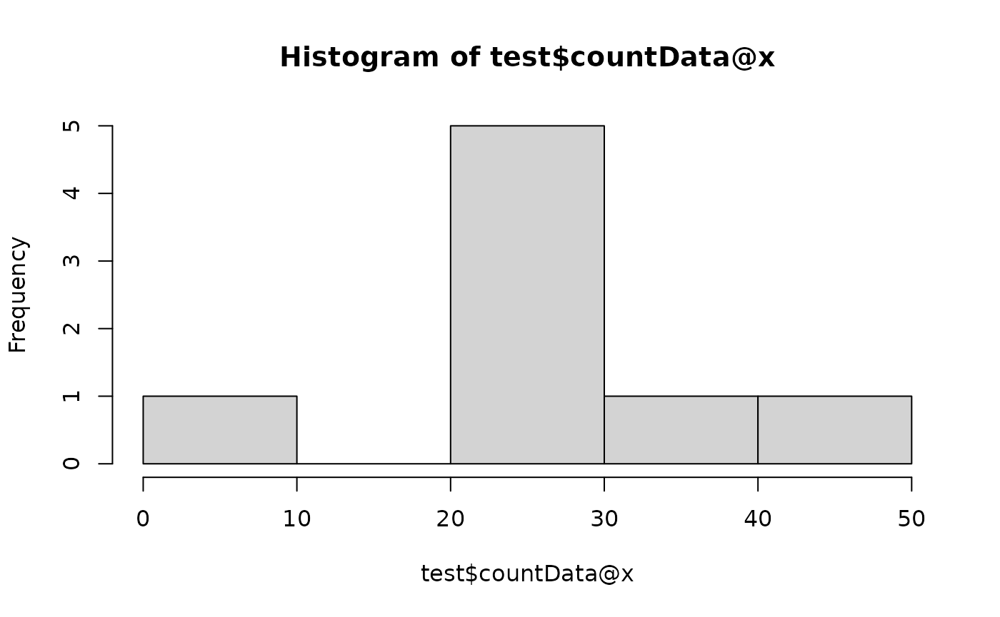
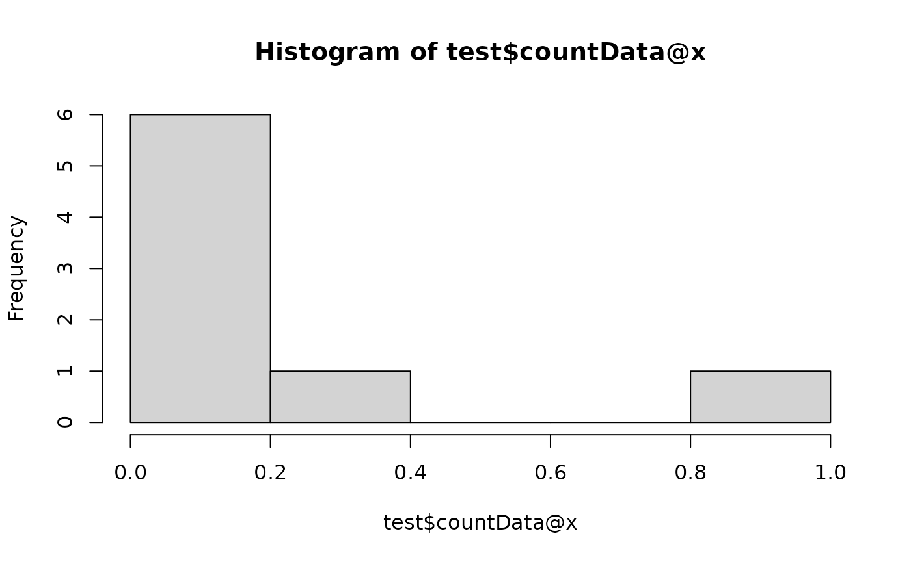
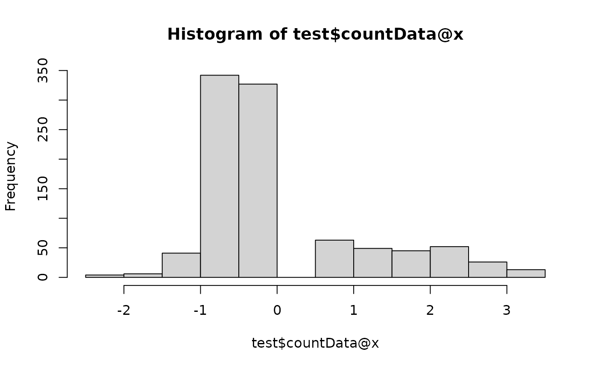
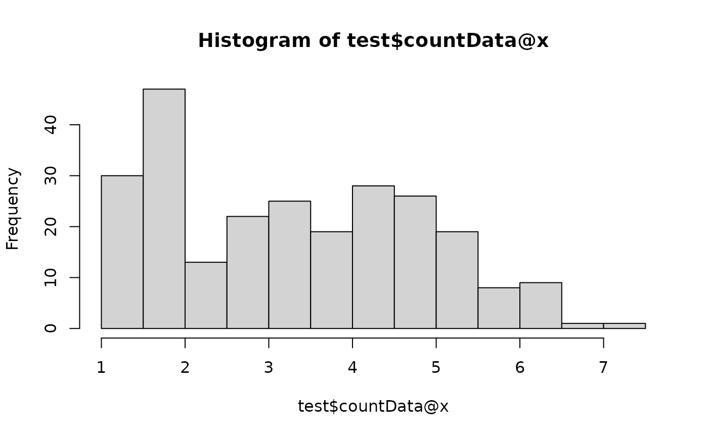

OmicFlow is an R package that has been inspired by phyloseq, which is
specifically made for microbiome analysis. Unfortunately, phyloseq is
not fast and allocates a lot of memory, on top of that it cannot be
extended to other omics layers within the microbiome field, making it
very specific to only microbial analysis.
Here, you can find a brief introduction in how OmicFlow
is constructed, how to load or import your data into the framework of
OmicFlow and generate some standard plots.
Disclaimer: OmicFlow is specifically designed to load,
subset and crunch (sparse) omics data in the right format with a low
memory footprint and increased performance. Therefore, it acts as the
beginning point prior to downstream complex visualisations, statistical
or machine learning modelling. Therefore, the visualisations in
OmicFlow are limited.
## Automatically loads `Matrix` and `data.table` R packages
library("OmicFlow")
#> Loading required package: R6
#> Loading required package: data.table
#>
#> Attaching package: 'data.table'
#> The following object is masked from 'package:base':
#>
#> %notin%
#> Loading required package: MatrixClasses
OmicFlow consists out of three classes, namely
omics, metagenomics and
proteomics. The main abstract class omics
contains most methods that are inherited by the other sub-classes
(i.e. metagenomics and proteomics) and it can
be used to load other types of omics data.
The omics class has only one mandatory requirement for a
successful initialization, which is the metaData field that
should match the Metadata File
Specification. Additionally, it also takes as input the
countData and featureData fields, the
featureData is constructed automatically when only the
countData is specified. The featureData first
column is always the FEATURE_ID, which may contain the
auto-generated feature ids if the countData has no
rownames or the user feature ids if those are present
either as rownames in the countData original file or as
loaded Matrix object.
class initialization is achieved via the $new() operator
as follows:
## Test set
metadata_file <- system.file("extdata", "metadata.tsv", package = "OmicFlow")
counts_file <- system.file("extdata", "counts.tsv", package = "OmicFlow")
## Loading only metaData
test <- omics$new(metaData = metadata_file)
#> ✔ metaData template passed the JSON validation.
#> ℹ Checking for duplicated identifiers ..
## Adding countData (should be loaded before-hand)
counts <- data.table::fread(counts_file)
# field should always be of `Matrix` class
# Notice the automatic creation of `featureData`
test$countData <- as(counts, "denseMatrix")
#> ! Placeholder featureData created.
#>
#> ── <omics> object
#> metaData: 9 variables × 4 samples
#> countData: 4 samples × 242 features
#> featureData: 0 attributes × 242 features
## Loading with all files in one go
test <- omics$new(
metaData = metadata_file,
countData = counts_file
)
#> ✔ metaData template passed the JSON validation.
#> ℹ Checking for duplicated identifiers ..
#> ✔ countData is loaded.
#> ! Created placeholder featureData.
metagenomics
The sub-class metagenomics contains the same fields as
the omics class, such as metaData,
countData and featureData, but also extends it
to the biomData, treeData and the ability to
specify the feature_names which are present in the
featureData.
metadata_file <- system.file("extdata", "metadata.tsv", package = "OmicFlow")
counts_file <- system.file("extdata", "counts.tsv", package = "OmicFlow")
features_file <- system.file("extdata", "features.tsv", package = "OmicFlow")
tree_file <- system.file("extdata", "tree.newick", package = "OmicFlow")
test <- metagenomics$new(
metaData = metadata_file,
countData = counts_file,
featureData = features_file,
treeData = tree_file
)
#> ✔ metaData template passed the JSON validation.
#> ℹ Checking for duplicated identifiers ..
#> ✔ featureData is loaded.
#> ✔ countData is loaded.
#> ✔ treeData is loaded.
#> ℹ Final steps .. cleaning & creating back-up
#>
#> ── <metagenomics> object
#> metaData: 9 variables × 4 samples
#> countData: 4 samples × 242 features
#> featureData: 7 attributes × 242 features
#> treeData: 242 tips × 241 nodes
## BIOM example, where `featureData` and `countData` are extracted from `biomData`
# test <- metagenomics$new(
# metaData = "metadata.csv",
# biomData = "test.biom"
# )Data fields
The abstract omics class and their sub-classes follow
the same subsetting and active-binding fields. The active-bindings are
the data fields, such as metaData, countData,
featureData and (optionally) treeData, these
can be used for both inspecting the data directly or performing direct
modifications that indirectly affects the other data fields.
Below an example given a pre-initialised metagenomics
class called test.
## Inspecting the data fields
test
#>
#> ── <metagenomics> object
#> metaData: 9 variables × 4 samples
#> countData: 4 samples × 242 features
#> featureData: 7 attributes × 242 features
#> treeData: 242 tips × 241 nodes
## Viewing data fields directly via the `$` operator:
test$metaData
#> SAMPLE_ID filename_fw filename_rev description treatment
#> <char> <char> <char> <lgcl> <char>
#> 1: S100 S100_R1_.fastq.gz S100_R2_.fastq.gz NA tumor
#> 2: S103 S103_R1_.fastq.gz S103_R2_.fastq.gz NA tumor
#> 3: S115 S115_R1_.fastq.gz S115_R2_.fastq.gz NA healthy
#> 4: S120 S120_R1_.fastq.gz S120_R2_.fastq.gz NA healthy
#> CONTRAST_sex VARIABLE_BMI VARIABLE_weight VARIABLE_time
#> <char> <int> <int> <char>
#> 1: male 22 77 A1
#> 2: female 23 71 B1
#> 3: female 30 69 A1
#> 4: male 22 80 B1
test$featureData
#> FEATURE_ID
#> <char>
#> 1: GTGTCAGCAGCCGCGCAATATCGTTATCGTTATACGTCACCGTTACCATCATCTAGGAGACAACACCTACTAGACTTAAGTTTGACAGGACAGGTTCGATAATGCACGCTTAAACTAGTCAACTAGGAACTTGGAGGAGGAATGGATGTCGGATCGTACAGCAATCCTCGCTGAACGAGCGCACAGGGGCATCATCGCTCTCACGGCGGCGAAACCCGTGTAGTCC
#> 2: GTGCCAGCAGCCGACTATGGAATTGGAGGACGTGACAAATGGATACGTGCCAAAATCAATATCCAGGAACGTCCCCTGCGCGCCTTCGAAAAGAACGGATTTCTTGTGATCCAGCGCATCATTTAAGTAAAGCGCGGCATCGCAGACGTAAGGACTAAGTTTTTTCCCGTACCCCAGATACTCCTCGTAGATACCCTAGTAGTCC
#> 3: GTGTCAGCAGCCGCGGCAGGATTTAAAGTGGCAAGGGATCTGATAATTCGCAATTCCCCATTTCTGATTTCTAACGAATTCTCAAATCTTGGGTCTCAAATCTCAAAAGAACTCGGTTTTCCCCGTGTAGTCC
#> 4: GTGCCAGCAGCCGCGGTCATCAAATTGAAACGGCAGAACGATCGGAGGATCGGAAAACTTCAGAGCTTTTTTAAAAAGTTGGTCATCCGTCGGTCCATAAACCGAACCTTCGCTCAAGGCCACATCAAGTCCGATTACCTTTGCACTTTGGAGCCGACCTAGCACCTTCCCAAAAATCTCCCGCCGCCACGGCCAGCTTCCGACGGAACCAATACTGGCATCGTCAATGCCAACGATGACGAGCTCGGCGAGAGCAGGTTTTTTTACAAAAAAACGATCGAATATTTTTTCCTGCCAGGAGTCCAGAAACCCCAGTAGTCC
#> 5: GTGCCAGCAGCCGCGACCACCAATATTCCTTCTTTCCACGCATTCTGGATCGCCTCTGTCATGCTGAGAGAAGAATCATGCCCCACAAAACTAAGGTTGATAATCCGCGCCCCCATTTTTCGCGCATACTCAACTGCGTTTGCCACATCACTGGTGGCGCCCTCGCCCATGCCATTTAAAATCCGCAGGGGCATAATTTTTGCGTTCCATGAAACCCCCGTAGTCC
#> ---
#> 238: GTGTCAGCAGCCGCGGTAATACGGGGGTGGCGAGCGTTACTCGGATTTATTGGGTGTAAAGGGCAGGTAGGCGTCTCTACAAGTTAAAAGTGAAATCCTGTGGCTCAACCACAGAACTGCTTCTAAAACTGTAGAGATTGAAGATAGGAGAGGAGAGCGGAATTCCCGGTGTAAGGGTGAAATCTGTAGATATCGGGAGGAACACCAGTGGCGAAAGCGGCTCTCTGGTCTATCCTTGACGCTAAGCTGCGAAAGCTAGGGGAGCAAACAGGATTAGAAACCCTGGTAGTCC
#> 239: GTGTCAGCAGCCGCGGTAATACAGAGGTGGCGAGCGTTACTCGGATTTATTGGGTGTAAAGGGCAAGTAGGCGTCTTAACAAGTTAGAAGTGAAATCCTGCAGCTCAACTGCAGAACTGCTTTTAAAACTGTTGAGATTGAGTTTGGGAGAGGAAAGCGGAATTCTCGGTGTAAGAGTGAAATCTGTAGATATCGAGAGGAACACCGGTGGCGAAGGCGGCTTTCTGGTCCAGTACTGACGCTGAATTGCGAAAGCTAGGGGAGCAAACAGGATTAGAAACCCGAGTAGTCC
#> 240: GTGTCAGCAGCCGCGGTAATACAGAGGTGGCAAGCGTTACTCGGATTTATTGGGTGTAAAGGGCAAGTAGGCGTCTTAACAAGTTAGGAGCGAAATCCTGCAGCTTAACTGCAGAACTGCTTTTAAAACTGTTGAGATTGAGTTTGGGAGAGGAAAGCGGAATTCTCGGTGTAAGAGTGAAATCTGTAGATATCGAGAGGAACACCAGTGGCGAAGGCGGCTTTCTGGTCCAATACTGACGCTGAATTGCGAAAGCTAGGGGAGCAAACAGGATTAGATACCCCCGTAGTCC
#> 241: GTGTCAGCAGCCGCGGTAATACAGAGGTGGCAAGCGTTGTTCGGATTTACTGGGTGTAAAGGGCACGTAGGCGGTTCGGAAAGTCGAATGTGAAATCCTATGGCTTAACCATAGAACTGCATCCGATACTTCCGGGCTAGAGTGTGGGAGAGGAAGATGGAATTCCCGGTGTAAGGGTGAAATCTGTAGATATCGGGAGGAACACCAGTGGCGAAGGCGATCTTCTGGCCCATTACTGACGCTCAGTGTGCGAAAGCAGGGGGAGCAAACGGGATTAGATACCCCGGTAGTCC
#> 242: GTGCCAGCAGCCGCGGTAATACGGAGGTGGCAAGCGTTGTTCGGATTTATTGGGTGTAAAGGGCATGTAGGTGGCCTTGCCCCGAAAGGGGTTCTTAGCGCAAGCTAAGAGTAAGTCAGATGTGAAATCCTCCCGCTCAACGGGAGAACGGCATTTGAAACTGCAAGGCTTGAGTACGGGAGAGGAGAGGGGAATTCCCGGTGTAAGAGTGAAATCTGTAGATATCGGGAGGAACACCAGTGGCGAAGGCGCCTCTCTGGCCCAGTTCTGACACTGAAATGCGAAAGCTAGGGGAGCAAACAGGATTAGAAACCCTGGTAGTCC
#> Kingdom Phylum Class Order Family
#> <char> <char> <char> <char> <char>
#> 1: Unassigned
#> 2: Unassigned
#> 3: Unassigned
#> 4: Unassigned
#> 5: Unassigned
#> ---
#> 238: Bacteria Verrucomicrobiota Omnitrophia Omnitrophales Omnitrophaceae
#> 239: Bacteria Verrucomicrobiota Omnitrophia Omnitrophales Omnitrophaceae
#> 240: Bacteria Verrucomicrobiota Omnitrophia Omnitrophales Omnitrophaceae
#> 241: Bacteria Verrucomicrobiota Omnitrophia Omnitrophales Omnitrophaceae
#> 242: Bacteria Verrucomicrobiota Omnitrophia Omnitrophales Omnitrophaceae
#> Genus Species
#> <char> <char>
#> 1:
#> 2:
#> 3:
#> 4:
#> 5:
#> ---
#> 238: Candidatus_Omnitrophus uncultured_bacterium
#> 239: Candidatus_Omnitrophus
#> 240: Candidatus_Omnitrophus
#> 241: Candidatus_Omnitrophus Candidatus_Omnitrophus
#> 242: Candidatus_Omnitrophus uncultured_bacterium
## Modifying a single data field has an effect on other data fields
test$metaData <- test$metaData[treatment == "tumor"]
#>
#> ── <metagenomics> object
#> metaData: 9 variables × 2 samplescountData: 2 samples × 115 featuresfeatureData: 7 attributes × 115 featurestreeData: 115 tips × 114 nodes
copy and reset
You have probably noticed by now that classes in
OmicFlow do not return a new object. This is done on
purpose to prevent the additional clutter of objects, and the higher
memory footprint that arises. Therefore, all modifications are done in
place when it comes to modifying the class object. Upon the first
initialization of the class, a backup of the data is created, and the
user can revert back to that point via the reset
function.
The backup is modified when a copy of the data is
created, then the backup point is set at the time when the copy has been
made. Often when you are not happy with the flow of your
subsetting/scaling strategy, the reset can be used to
revert back or create multiple copies.
## Using the `test` from the previous example where only `tumor` is selected
test2 <- test$copy()
test2
#>
#> ── <metagenomics> object
#> metaData: 9 variables × 2 samples
#> countData: 2 samples × 115 features
#> featureData: 7 attributes × 115 features
#> treeData: 115 tips × 114 nodes
test$reset()
test
#>
#> ── <metagenomics> object
#> metaData: 9 variables × 4 samplescountData: 4 samples × 242 featuresfeatureData: 7 attributes × 242 featurestreeData: 242 tips × 241 nodesSubsetting
Data modifications can be achieved by changing a single data field
via the active-binding or you can use in-built subsetting functions,
such as feature_subset, sample_subset,
samplepair_subset.
test$sample_subset(treatment == "tumor")
#>
#> ── <metagenomics> object
#> metaData: 9 variables × 2 samples
#> countData: 2 samples × 115 features
#> featureData: 7 attributes × 115 features
#> treeData: 115 tips × 114 nodes
test$feature_subset(Genus == "Acinetobacter")
#>
#> ── <metagenomics> object
#> metaData: 9 variables × 2 samplescountData: 2 samples × 8 featuresfeatureData: 7 attributes × 8 featurestreeData: 8 tips × 7 nodesscaling
The transformation or standardisation of the countData
can be achieved via the scale function, which performs
normalisation methods or transformations together or independently.
## Original data
hist(test$countData@x)
# Normalisation
test$scale(method = "tss")
hist(test$countData@x)
# Standardisation
test$reset()
## CLR skips zero's if pseudocount is not added
test$scale(method = "clr")
hist(test$countData@x)
# Transformation
test$reset()
test$scale(method = "none", transform = log2)
hist(test$countData@x)